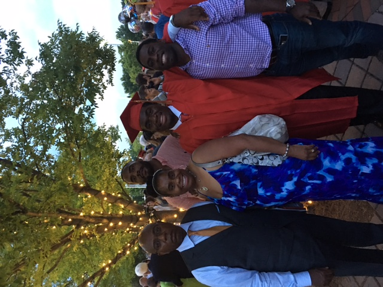
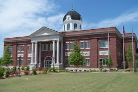

EARLY LIFE!!!

This page is where I tell you a little bit about myself!
Born in Atlanta, GA on July 3rd, 1997, I was the youngest of three boys to George and Michelle Washington.
My two older brothers, Edwin and Christian are both 32 and 26 years old.
Growing up, I lived in the city of Atlanta until about 2 years old and also spent some time in Savannah.
Around 3, I moved to a metropolitan city area named Snellville, located in Gwinnett County, GA approximately 35 miles from the city of Atlanta.
From there, I attended St. Peter Claver Regional School in Decatur, GA where I meant a couple of long time friends and made relationships that still stand to today.
Moving to Loganville, Ga around the age of 10, I gained knowledge of the "country" lifesyle and way of living being surrounded by farms and more.
Although i lived in the "country" I spent a lot of time in the metro Atlanta area more time than not playing sports and attending school and church.
Growing up around metro Atlanta, it allowed me gain an understanding of different races, ethnic backgrounds and cultures from all over the world.

Homepage
Next-->